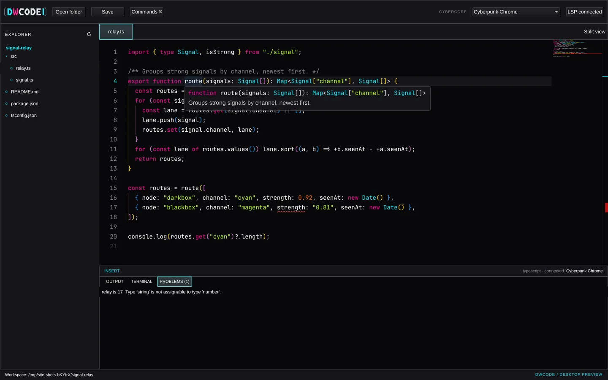

cybercore / dwcode · desktop prototype
Code after dark.
A keyboard-first desktop editor. A native Qt Quick shell wraps the Monaco editing surface, with real file saving, language servers, a workspace terminal and every Cybercore palette.
❯ ./build/dwcode --workspace ~/signal-relay ✓ workspacesignal-relay · 5 files✓ editormonaco 0.52 · local bundle✓ lsptypescript · connected✓ themecyberpunk chrome · 1 of 84! relay.ts:17Type 'string' is not assignable to type 'number'.❯

// 01 · what works today
An editor, not a mock-up.
Each feature runs in the desktop prototype and is covered by tests that click and type through the real window. Open a card for the details.
// still to come file watching, crash recovery, a New File command, a real PTY terminal, extension packs loaded at runtime. DWCode uses Monaco, not VS Code, so VS Code extensions do not run in it.
// 02 · tour
Straight from the app.
Window captures of the desktop build working on a small TypeScript project, not renders.
// 03 · palettes
Tune it to your signal.
DWCode reads the canonical Cybercore theme files: 84 palettes in 8 families. Browse them like a project tree; the preview is rendered in each theme's real colours.
// 04 · live panel
Take the editing surface for a spin.
The same Monaco bundle the desktop app loads, running in your browser on sample files.
// browser preview edits stay in this tab. Opening folders, saving, the terminal and language servers need the desktop app, because a web page can't touch your files or start processes.
// 05 · from source
Build it on Linux.
Needs Qt 6 with Quick Controls and WebEngine Quick, qmake6, a C++17 compiler, Node.js and npm. On Arch / Omarchy: qt6-declarative qt6-webengine qt6-webchannel nodejs npm.
1git clone https://github.com/cybercoretech/dwcode.git
2cd dwcode
3npm ci
4./bin/build
5./build/dwcode --workspace ~/your/project// note DWCode is a prototype: no packaged releases yet, tested on Linux only.